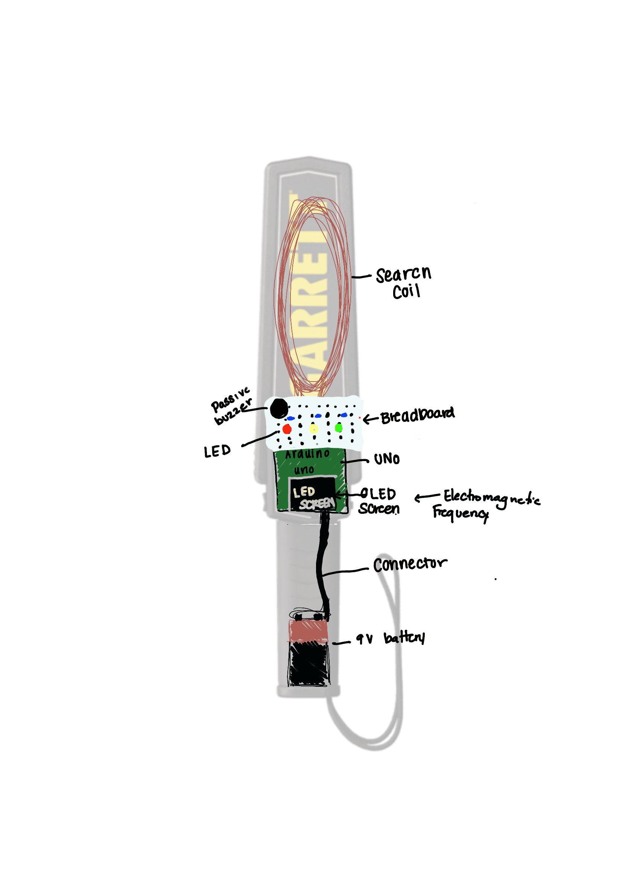
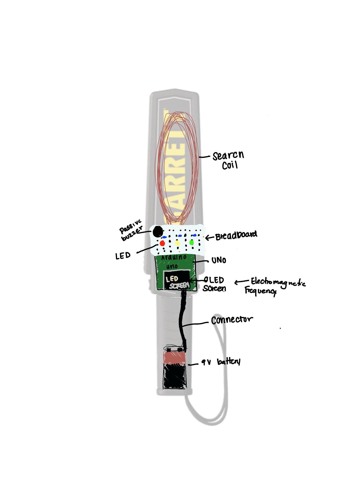
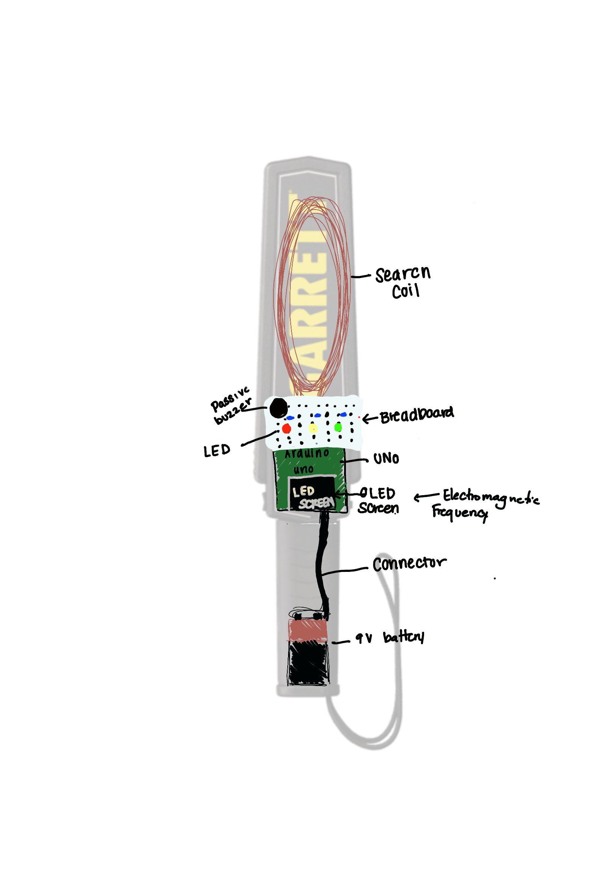

Hello!
My name is Skylynn Cantor. Currently, i'm studying Computer Science
and Accounting at the University of Nevada, Las Vegas. And actively
exploring options within the CS field. While I'm still discovering
where I want to specialize, areas such as Web Development, IT and Software Quality
Assurance have particularly caught my attention.
Prepared FDA-compliant software documentation (functional specs, verification
protocols), ensuring regulatory adherence.
Conducted software validation testing and device QA, identifying vulnerabilities during
development.
Operated and tested the SmartERG and Twilight Dark Adaptometer devices, assisting with
hardware setup, smartphone
software configuration, and clinical research testing. Electrode Performance
Benchmarking for Biosensor
Contributed to web app development using AWS and Vue.js, created user guides, and
technical walkthroughs to support
end-users and internal teams.
Researched and developed affordable Arduino project kits designed to be educational and
engaging for high school students.
Created prototypes in SolidWorks and produced components using various 3D printers.
Programmed projects in Arduino IDE with C++ and integrated AutoCAD designs into builds.
Gained hands-on experience in soldering, electrical and computer engineering through kit
development and testing.

Arduino IDEC++3D Printing
Relevant Courses
Computer Science
Problem-solving methods and algorithm development in a
high-level programming language.
Program design, coding, debugging, and documentation using techniques of good programming style.
Data structures and algorithms for manipulating
linked lists. String and file processing.
Recursion, Software engineering, structured programming and testing, especially larger programs.
Introduction to sequential and linked structures.
File access including sequential, indexed sequential
and other file organizations.Internal structures including stacks, queues, trees, and graphs.
Algorithms for implementing and manipulating structured
objects. Big-O-notation
Algorithms from systems
programming including conversion, buffering, device drivers,
assemblers and loaders. Use of system services, macros, and linkage conventions.
ABasic organization of digital computers, including I/O units, arithmetic logic units, control units,
and memory organization. Number and character representations. Instruction sets and addressing. Microprogramming.
Accounting
Overview of the annual report with emphasis on financial
statements.
Analysis of business transactions and their effects on external financial statements. Theories,
practices, and
concepts underlying accounting information used in the decision-making process.
Basic concepts and procedures of managerial accounting.
Focuses on making
management decisions using financial and related information. Provides methods for managers to
correctly identify
and analyze alternative courses of action in a business context.
Finance function within business organizations;
tools and techniques
of financial management. Topics include financial mathematics; valuation of securities; financial
analysis; capital budgeting;
concepts of capital structure and dividend policy; and working capital management.
Explores the accounting profession, accounting information systems, internal controls,
accounting decision-making, the accounting process and financial accounting, and accounting research.
This course is crosslisted with ACC 600. Credit at the 600-level requires additional work.
Study of current accounting objectives, principles, theory, and practice in the preparation,
interpretation, and analysis of general purpose financial statements for external users, as
established by the Financial Accounting Standards Board and predecessor organizations.
This course is crosslisted with ACC 601. Credit at the 600-level requires additional work.


 
